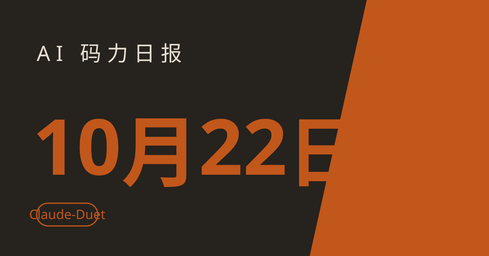

AI 码力日报 · 2026年10月22日

⚡ 一句话速览
- Anthropic 推出 Claude Duet：不用你问、它主动找你的 agent，每天先给你一份简报，Pro / Max 用户候补体验，背后是 Opus 5.5。
- OpenAI 和 Google 握手了：OpenAI 前沿模型和 Codex 要进 Google Cloud 的 Model Garden，几周内全面可用，微软仍是 OpenAI 的第一云合作伙伴。
- PHP 严重漏洞，全网升级中：7 月由安全公司 Calif 在 OpenAI 的 Patch the Planet 计划协作下发现，Google 的安全团队也独立发现了同类问题，补丁 10 月 21 日提前放出——跑 PHP 的站今天就该升级。
- Meta 个人 agent 40 天破 1000 万下载：Sensor Tower 数据，美国占 1020 万，7 日留存 30%，远高于 ChatGPT、Claude、Grok 的同期表现；但同一天 Meta 因分享链接隐私问题暂停了对话分享功能。
🤖 今日 AI Coding 动态
Anthropic 推出 Claude Duet：不等你问、先来找你的 agent
跟你有啥关系：如果你每天被 Slack、邮件、日程追着跑，Duet 就是 Anthropic 给出的答案——它连上你的应用，每天早上先推一份简报，之后每隔几小时巡一圈，有事需要你注意就发提醒，还能直接动手干活：排会、做财务预测、搭个 Web 应用都行。底层是 Opus 5.5，接了 Claude Marketplace 的 6000 多个连接器（Gmail、Slack 都在内），还能走 Stripe Link / Shop Pay 帮你下单。敏感操作（发消息、付款、签文件、删文件）会先征得你同意——Anthropic 自己也承认，它偶尔会误判事情的紧急程度，订票这类个人事务还不太灵。目前是研究预览、要排队，仅限美国 Pro / Max 用户，iOS、Android 和网页都能用，消耗计入你现有的套餐额度。OpenAI 上个月推了常驻 agent、Meta 的个人 agent 刚破千万下载，agent 大战这下三家齐了。原文链接
OpenAI 模型和 Codex 进 Google Cloud：三大云从此全有 OpenAI
跟你有啥关系：以前想在 Google Cloud 上用 OpenAI 的模型得绕路，现在官方通道来了。10 月 21 日 OpenAI 宣布，前沿模型和 Codex agent 工作流将进入 Google Cloud 的 Model Garden，几周内全面可用，现在就能申请接入；Google Cloud 客户可以直接在 Marketplace 上购买，还能用已有的 Google Cloud 消费承诺抵扣。OpenAI 的模型还会"很快"出现在 Google Antigravity 和 Gemini Agent 里。OpenAI 特意强调了一句：微软仍是它的第一云合作伙伴。这话的潜台词是：排他时代结束了，模型开始像云服务一样多家上架——对开发者来说，选云的时候不用再为模型站队了。原文链接
PHP 严重漏洞提前曝光：跑 WordPress、跑 PHP 的今天就升级
跟你有啥关系：只要你的站跑 PHP（WordPress 全系都算），这条就是今天的最高优先级。时间线是这样的：7 月安全公司 Calif 的研究员在 OpenAI 的 Patch the Planet 计划协作下发现了这批漏洞，8 月 1 日上报给 PHP 基金会；Google 的云安全团队也独立发现了同类问题，三方一起做了补丁、测了几周。原定 10 月 22 日公开，但 10 月 20 日 Hacker News 提前泄露，补丁被迫在 10 月 21 日提前放出。研究员原话：这次补丁"非常大"，不像往常那种小而精准的修复，出错或修不全的概率更高——所以他们才拖到测稳了才发。还没升级的，现在就去主机面板或找服务商确认补丁版本，别等。原文链接
Meta 个人 agent 40 天破千万下载，同一天却因隐私问题暂停分享
跟你有啥关系：先看数字——Meta 的个人 agent 上线 40 天下载 1090 万，其中美国 1020 万，10 月 16 日日活 250 万，7 日留存 30%、14 日留存 23%，同期 ChatGPT、Claude、Grok 的 7 日留存平均只有 19%。Meta 10 月广告预算的 39% 都砸给了它，财报电话会上扎克伯格还说要发新股给 AI 扩张供血。再看另一面：10 月 21 日当天，Meta 暂停了它的对话分享功能——此前有报道称分享链接会暴露用户的个人对话和业务信息，不用登录就能打开。agent 越能干、接的账号越多，这种"分享一时爽、隐私火葬场"的坑就越多。我用 agent 类产品的一条铁律：凡是能生成公开链接的功能，先默认它是公开的。原文链接
微软 Copilot 进大众集团：33 万员工、2.6 万个 agent 在跑
跟你有啥关系：这是目前披露过的最大规模企业 AI 落地之一，值得当成"agent 在大公司到底怎么用"的参照。微软 10 月 21 日宣布，大众集团已有超过 33 万名员工用上 Microsoft Copilot，约占其总人数的一半；路径是先铺 Copilot Chat（月活一度超过 30 万），再上带 Work IQ 的深度场景，覆盖工程、生产、采购、销售；过去一个月光活跃的 agent 就有 2.6 万多个。下一步双方还要把大众的统一数据底座 Intelligent Data Foundation 扩到 Microsoft Fabric 上。对打工人的启示很直接：agent 的战场已经从"个人提效"转到"流程改造"了，你会不会给 agent 搭流程、比会不会写提示词更值钱。原文链接
Google 的 Gemini agent 伸向政府：政务版预览来了
跟你有啥关系：10 月 8 日通用版 Gemini agent 发布后，Google 10 月 20 日推出了政府行业版预览，面向联邦、州、地方机构。核心是五件套：领域专家写的政务 skill（可复用的指令和上下文）、接政府内部系统的安全连接器、第三方政务软件商的预置 agent，以及"每步关键操作都要人点头"的集中治理——点名提到的场景是 FOIA（信息自由法）检索和批量脱敏。政务系统以流程死板、数据孤岛著称，agent 厂商啃下这块，等于拿到了最难啃的企业市场样板间；做政务、合规方向的开发者可以留意它的 skill 写法。原文链接
🐑 今日羊毛
免费 API 三件套：Groq + Cerebras + Google AI Studio，零成本跑开源大模型
昨天推过的 MiniMax M3.1 Flash 免费今天到期，还没跑的抓紧收尾；今天补一套长期能薅的免费 API 组合，适合平时做实验、跑小项目的人长期挂着用。
- 怎么薅：去 Groq 注册拿 key，免费层每天能在 gpt-oss-120b 上跑 1000 次请求（每分钟 30 次、每天 20 万 token）；Cerebras 每天给 100 万 token 免费额度，适合大批量刷；Google AI Studio 免费层能直接调 Gemini Flash 系列（含 2.5 Pro），三家都兼容 OpenAI SDK 的调用方式，换 base_url 就能切。直达链接
- 有效期：长期免费层（截至撰写时），额度按账号每天/每月重置，不是一次性赠金
- 适合谁：不想为实验掏钱、想同时对比几个模型表现的人；注意 Google 免费层提示词可能用于改进产品，别传敏感数据
OpenRouter 免费模型：一个 key 试遍各家，充 10 美元日限额翻 20 倍
一句话：OpenRouter 上常年挂着一批 :free 后缀的免费模型（比如 NVIDIA 的 Nemotron-3-Super-120B、Google 的 Gemma 系列），不用绑卡就能调。
- 怎么薅：去 OpenRouter 注册拿 key，把 OpenAI 兼容客户端指向
https://openrouter.ai/api/v1，模型填带:free的名字；免费层每分钟 20 次、每天 50 次，账号里充 10 美元额度后日限额提到 1000 次。直达链接 - 有效期：长期（截至撰写时），免费模型名单经常变，用之前先在站内确认
- 适合谁：想一个接口横评多家模型、又不想每个平台都注册的人
⭐ 今日 GitHub 热门项目
morluto/rea：指着任何 App，让 agent 反向拆解它是怎么做的
一句话：给 coding agent 配的逆向工程工具包——不用源码，就能讲清楚一个 App 或网站的某个功能是怎么实现的。解决什么问题：想抄竞品功能、接手没文档的老系统、审计自家产品时，以前只能人肉翻网络请求和代码；rea 用 Hopper / Ghidra 看原生二进制、用工具链看 JS / Electron / .NET / 网站，把每次点击对应的请求、代码、返回数据都钉出来，再写成带证据的解释。关键设计是每条结论都标"实测 / 推测 / 未知"，推测冒充不了事实。过去 5 天涨了约 7.8 万 star（截至撰写时）。适合：做竞品分析、接手遗留系统、给 agent 找"这个功能到底怎么实现"答案的人。项目地址
Gathin23/cleanyourtv：把广告塞满的 Android TV 还原成干净的电视
一句话：通过同一 Wi-Fi 用 ADB 脚本给 Android TV 瘦身：先备份，再关掉遥测、赞助位和预装应用，不卸载任何东西，最后装一个只有 4 个应用位的极简启动器。解决什么问题：国产电视开机广告、推荐位、臃肿预装让人头大，cleanyourtv 附带小米、TCL、索尼等品牌的实测清单，一键还原脚本还能随时反悔。单日新增约 4200 star（截至撰写时）。适合：家里电视被广告淹没、又不想刷机折腾的人。项目地址
MadsLorentzen/ai-job-search：用 AI 批量找工作的加速黑马
一句话：把求职流程自动化的工具，本周 star 增速从每天 364 猛涨到每天 2543，是本周加速最猛的 AI 项目之一。解决什么问题：海投简历费时费力还容易漏跟进，这类工具把搜职位、匹配、跟进做成流水线。增速本身就说明一件事：拿 AI 找工作的人正在变多。适合：正在看机会、想批量投递又不想纯手工作业的人；提醒一句，自动投递前先确认目标公司的申请规则，别因为群发被拉黑。项目地址
🛠️ 值得一试的工具：cloudflare/security-audit-skill
是什么：Cloudflare 官方出的 coding agent 安全审计 skill——多阶段审计流程，产出能独立验证、机器可读的审计结论，而不是 agent 随口一句"看起来没问题"。
解决什么痛点：让 agent 审代码时最怕两件事：漏掉真问题，以及编造假问题。security-audit-skill 把审计拆成多个阶段、每条结论都要求可验证，单日新增约 1700 star（截至撰写时），说明大家对"agent 审计结果能不能信"这件事是真焦虑。
免费额度：skill 本身开源免费；跑审计消耗的是你自己的模型额度。
verdict： 值得试——Cloudflare 官方背书、可验证结论的设计正好打在 agent 审计的痛点上；适合已经在用 Claude Code / Codex、想给上线前加一道安全检查的人。注意它只是审计工具，扫出来的问题还是要人复核再修。
🎓 3 分钟小教程：3 分钟接通 Groq 免费层，白嫖 gpt-oss-120b 跑起来
前置条件：Python 3.10+，一个能联网的终端，Groq 账号（免费注册）。
- 去 Groq 控制台创建一个 API key，记下来（只显示一次）。
- 装 OpenAI 官方 SDK（Groq 兼容它的调用方式）：
bash pip install openai - 写个最小脚本
groq_test.py，把base_url指到 Groq、模型填openai/gpt-oss-120b： ```python from openai import OpenAI
client = OpenAI(
api_key="你的 Groq key",
base_url="https://api.groq.com/openai/v1",
)
resp = client.chat.completions.create(
model="openai/gpt-oss-120b",
messages=[{"role": "user", "content": "用一句话解释什么是 MoE"}],
)
print(resp.choices[0].message.content)
4. 跑起来：bash
python groq_test.py
```
预期效果：终端里立刻返回模型的一句话解释，全程零成本（免费层每天 1000 次请求、每分钟 30 次）；之后把 base_url 和模型名换掉，就能在 Groq、Cerebras、OpenRouter 之间无痛切换，写一套代码横评多家模型。
数据截至撰写时，仅供参考。